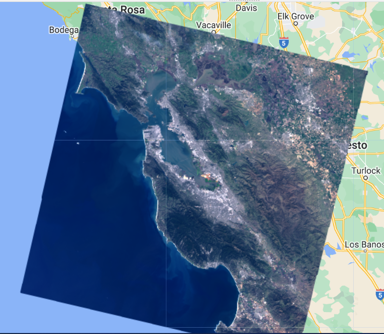
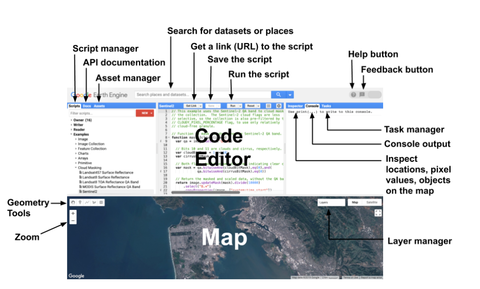
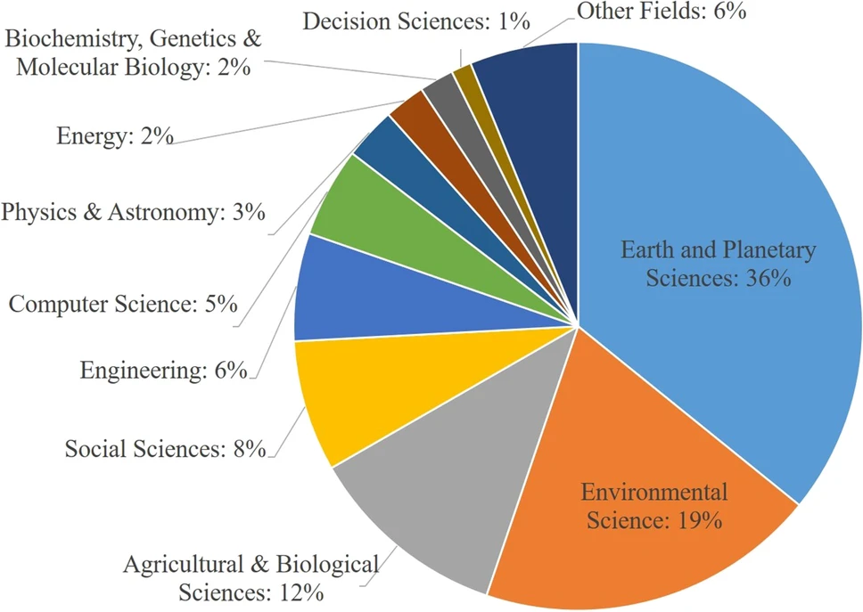
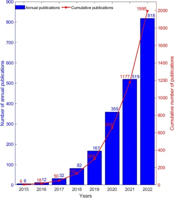
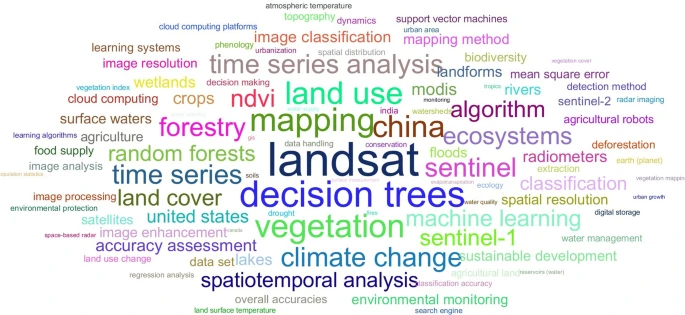

5 Google Earth Engine
5.1 Summary
5.1.1 Definition
- Google Earth Engine: offer “Geospatial” processing service at scale, stores data on servers and takes the code written by prohrammer and applies it
- Image = raster, has bands
- Feature = vector, has geometry and attributes(dictionary of properties in GEE)
- ImageCollection = Image stack
- FeatureColletion = Feature stack(lots of polygons)
- Image scale: means pixel resolution in GEE, is set by the output not input.
5.1.2 Part 1: The set up of GEE
GEE basic operation
- GEE use JavaScript
- Relating spatial data formats we have seen to GEE
- Scale(resolution)
- Run codes on both the client and server side

map after scale
5.1.3 Part 2: GEE in action

screen of GEE
A significant advantage of GEE compared to other software I am familiar with before is that it is very fast and does not require much computing resources (because it is an online website). Like GIS, GEE has a lot of objects(vector, raster, feature, string, number) belongs to different classes with specific GEE functions
The remote sensing operations using R taught in CASA0005 GIS can basically be implemented in GEE, such as spatial operations (including join, partition statistics, filtering images or specific values) and some analysis methods (such as machine learning, classification, deep learning) and output some charts and applications. The specific code is too much not put here, you can see the ppt of this chapter or check the Internet.
5.2 Application
The Google Earth Engine (GEE) platform offers expanded possibilities for conducting earth observation research. Launched in late 2010, it grants access to a wealth of satellite and supplementary data, alongside cloud computing capabilities and processing algorithms designed to handle large datasets with ease. (Kumar and Mutanga 2018)Its extensive data archive encompasses information from various satellites, as well as vector datasets from Geographic Information Systems (GIS), social and demographic data, weather records, digital elevation models, and climate datasets. This resource empowers scientists, independent researchers, enthusiasts, and nations to delve into this extensive repository of information for tasks such as change detection, trend mapping, and resource quantification on Earth’s surface, surpassing previous capabilities. (Mutanga and Kumar 2019)

Resource from: (Pham-Duc et al. 2023)
The fields of articles used GEE
Consequently, the platform’s popularity has surged, reflected in a sharp increase in the number of GEE-related articles, with nearly 85% of them being published within the last three years.(Pham-Duc et al. 2023)

Resource from: (Pham-Duc et al. 2023)
Articles published each year using GEE
In addition, by extracting the keywords of these words to make word clouds, it can be seen that the data observed by Landsat, Stneinel-1, MODIS and Sentinel-2 in GEE are widely used in the research.

Resource from: (Pham-Duc et al. 2023)
World cloud
In the field of Earth and Planetary Science, I am very interested in land use analysis (Floreano and Moraes Luzia 2021)and crop production analysis(Venkatappa et al. 2021), and the ideas of these two articles happen to be very similar. They all observe changes in the development of remote sensing data by using GEE to visualize it over different time periods, then consider the reasons for the changes, and then consider the impact of some particular event on their research objectives. For example, Venkatappa et al. (2021) considers the impact of drought and flood on crop production while Floreano and Moraes Luzia (2021) considers whether the promulgation of some policies has an impact on land use.
5.3 Reflection
GEE is really a popular platform for remote sensing, probably due to the fact that its operating system is very simple and friendly to most people. Although I was prepared to find many articles before I looked up the application of GEE, the number of articles related to it still shocked me. What is even more shocking to me is that there is even a special category of articles on statistics and analysis of these GEE-related articles, and these articles are published almost every year. From discussing the potential and trend of GEE (Gorelick et al. 2017; Kumar and Mutanga 2018) to systematically reviewing these texts nearly every year(Zhao et al. 2021; Tamiminia et al. 2020), and even considering the impact of major events such as covid-19(Pérez-Cutillas et al. 2023), it can be seen that GEE has undoubtedly become a hot spot in remote sensing in recent years.
What worried me was that I hadn’t worked with JavaScript before, and this week’s code, while seemingly basic, still took me a lot of time to understand and find bugs. It seems that GEE will still be needed in the next few weeks of the course, and hopefully I can learn more about JavaScript and how it is used in GEE in the future.